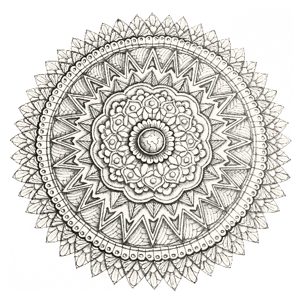

inspiraties
 terug naar websiteNiets in de wereld is zo zacht en meegaand als water. En toch, als het erom gaat het harde en onbuigzame te smelten, is er niets dat sterker is. Het zachte overwint het harde; het zachtmoedige overwint het strenge. Iedereen weet dat dit waar is, maar weinigen kunnen ermee omgaan.
(Lao tzu – tao te ching)
Literatuur
Decisions
Boris A. Novak (1953), Sloveens dichter
Between two words
choose the quieter one.
Between word and silence
choose listening.
Between two books
choose the dustier one.
Between the earth and the sky
choose a bird.
Between two animals
choose the one who needs you more.
Between two children
choose both.
Between the lesser and the bigger evil
choose neither.
Between hope and despair
choose hope:
it will be harder to bear.
''Van alle zintuigen, overtreft de tastzin alle andere. Massage is een voortreffelijke wijze om de problemen van deze wereld en de volgende te overwinnen.''
- Sushruta Samhita tantra
Create a clearing
Do not try to serve
the whole world
or do anything grandiose.
Instead, create
a clearing
in the dense forest
of your life
and wait there
patiently,
until the song
that is yours alone to sing
falls into your open cupped hands
and you recognize and greet it.
Only then will you know
how to give yourself
to the world
so worthy of
rescue.
Martha Postlethwaite